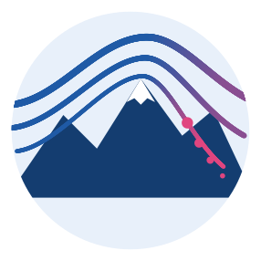

Otso
1 km
← Otso 1.2
About this map
Foehn paper ↗
🌐
English
EN
🌙
Otso
1 km
beta
…
📍
My location
PM2.5, daily mean
Probability > 15
Opacity
…
Research forecast.
About this map
What it shows
What it is not